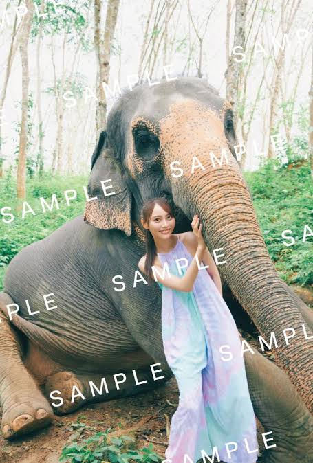
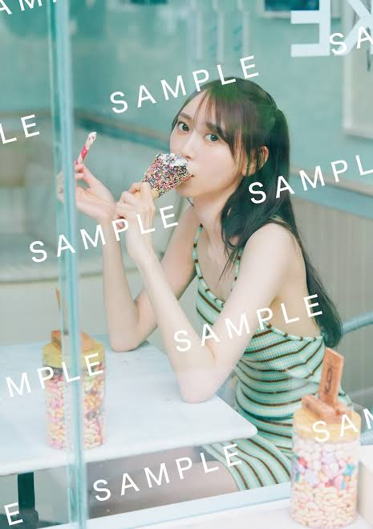
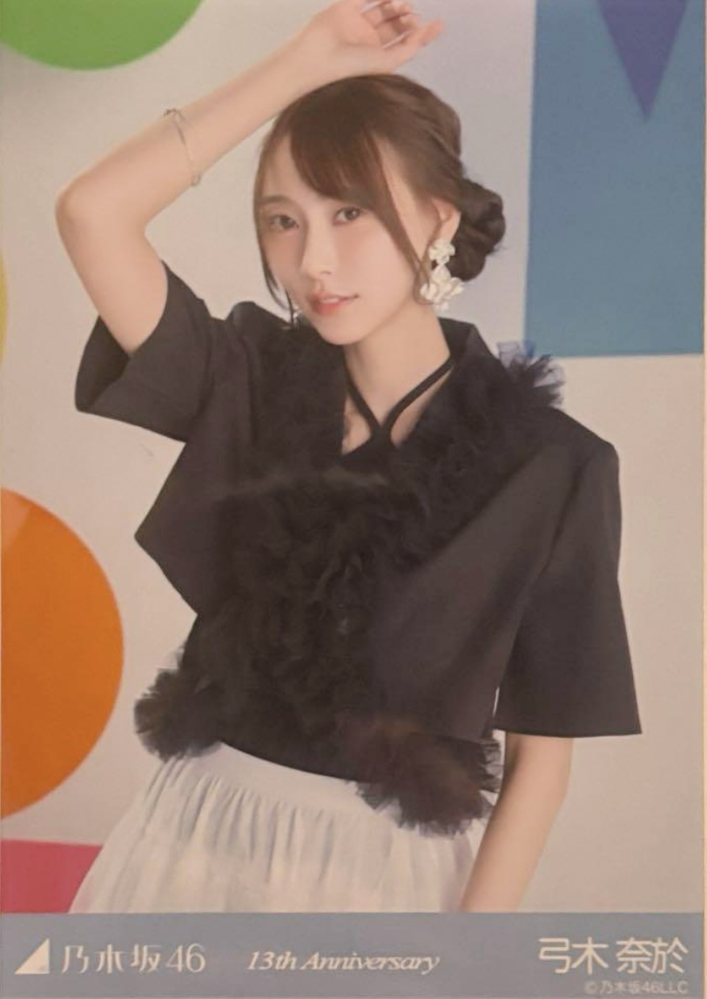
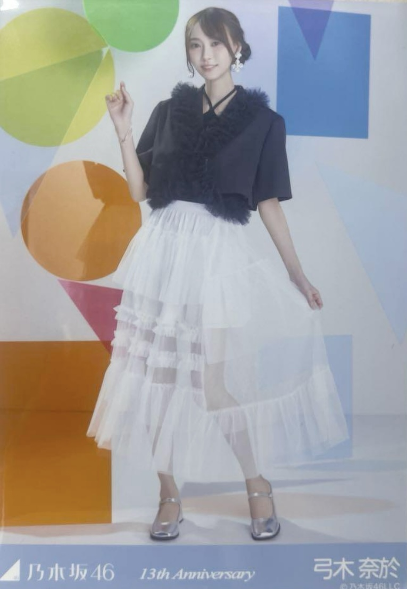

1st 写真集『天使だったのか』
25歳の誕生日、夢が叶った一冊。
ファン待望の1st写真集は、彼女の「素の表情」をテーマにタイのプーケットとバンコクで撮影されました。水着やランジェリーショットにも初挑戦し、これまで見せたことのない大人びた表情から、いつもの太陽のような笑顔まで、弓木奈於の魅力が凝縮されています。
タイトルの『天使だったのか』は、総合プロデューサーの秋元康氏が命名。「大人の色気とかわいらしさが同居している、“天使”のような存在」という意味が込められており、まさに彼女の本質を表現した一冊です。


生写真コレクション
価格
乃木坂46は、ランダム生写真が5枚1セットで1,200円で販売されるのが基本です。
基本の種類
1人のメンバーにつき、ポーズの違う「ヨリ」「チュウ」「ヒキ」の3種類が存在します。これを3種コンプ（コンプリート）と言います。
レアポーズ
衣装によっては、稀に「座りヨリ」や「座りチュウ」といった特別なポーズが封入されることもあり、コレクションの楽しみの一つです。
ヨリ

チュウ
ヒキ
座りヨリ (レア)
座りチュウ (レア)
My Favorite Shots